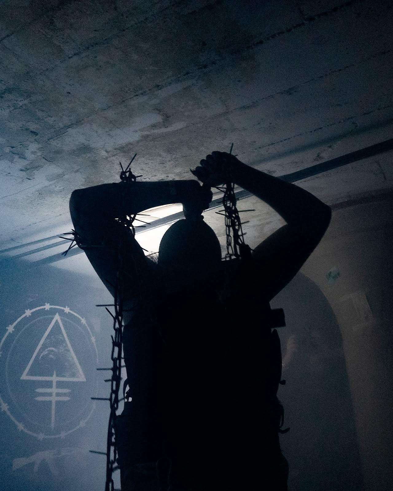

WHITEPHOSPHORUS

Whitephosphorous is a death industrial act born of the authoritarian led conversation that an infinite amount of taxpayer money should be spent by the state on weapons of war advertised as measures of security against its enemies. Even when those percieved enemies are domestic and civilian targets. The nightmare grows as the war hounds in the White House begin to point fingers at anyone and everyone critical of their methods in a permanent climb towards the total canonization of the man who holds the leash on the American war machine.
Combining samples of fascist politicians, combat footage, and the police state the project seeks to emphasize the horror that we have begun to accept as the new normal through their campaign of propaganda and intimidation.
A better world is possible but it is only after the love of power is long buried in a deep and unmarked grave.